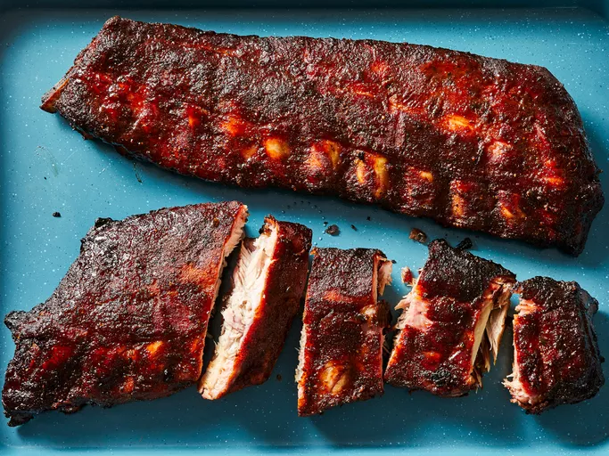

Sweet Smoked Pork Ribs

This smoked rib recipe uses a sweet and spicy dry rub to bring out all the flavors. Slow cooked for 4 hours to have the meat falling off the bone.
Ingredients
Pork Ribs
- 1/4 cup salt
- 1/4 cup white sugar
- 2 tbsp packed brown sugar
- 2 tbsp ground black pepper
- 2 tbsp ground white pepper
- 2 tbsp onion powder
- 1 tbsp garlic powder
- 1 tbsp chili powder
- 1 tbsp ground paprika
- 1 tbsp ground cumin
- 10 lbs baby back pork ribs
Sauce
- 1 cup apple juice
- 1/4 cup packed brown sugar
- 1/4 cup bbq sauce
Steps
- Gather all ingredients
- Prepare ribs: Stir all spices together in a small bowl
- Rub spice mixture all over ribs; then cover with plastic wrap and refrigerate for at least 30 mins
- Make Sauce: Stir apple juice, brown sugar, bbq sauce together until well combined
- Unwrap ribs and arrange the ribs on racks in smoker. Fill smoker pan with any flavor smoking chips and heat to 270 degrees F. Cook ribs for 1 hour.
- Brush sauce on ribs. Continue cooking ribs and brushing sauce every 30 to 40 minutes, until meat is no longer pink and begins to shrink back from the bone, 3 to 4 hours.
- Brush ribs one last time and remove from smoker. Wrap ribs in aluminum foil for 10 to 15 minutes ti allow juices to reabsorb into the meat.
- Enjoy!